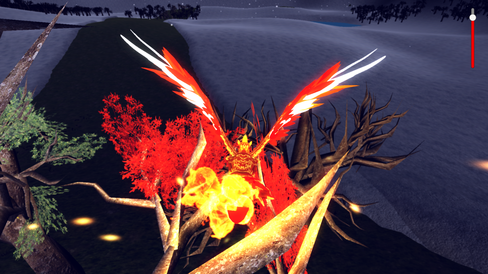
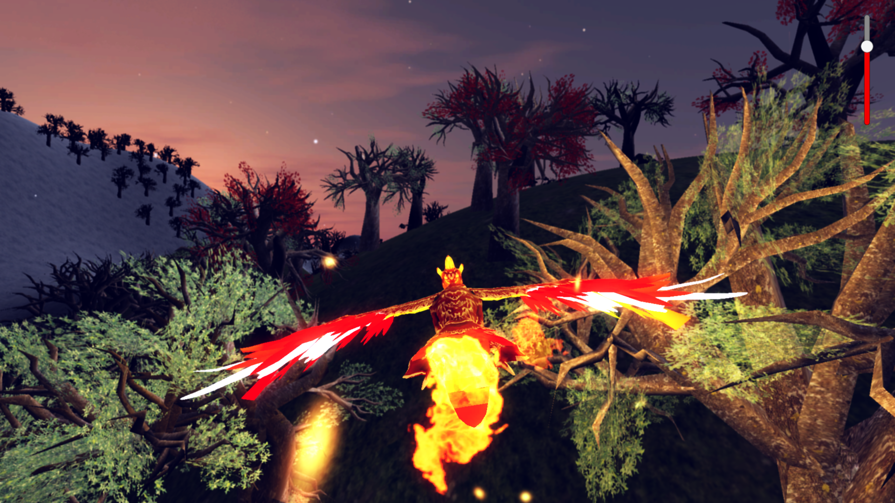
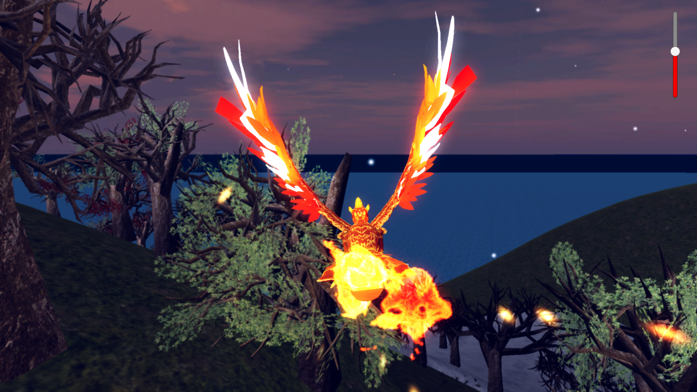

Coastal Quest Scavenger Hunts
Flask/Javascript/Python — Fall 2017
Coastal Quest Scavenger Hunts is a scavenger hunt web app that was one of three featured Capstone projects for CSUMB's Fall 2017 semester. In the app, users were guided through the process of browsing through, buying, and playing a scavenger hunt, with scoreboards to show them how well they did as well as prizes for the top scoring team after the hunt's ending date. This web app was developed by 4 computer science majors, each with a different concentration, serving the needs of a client with no technical experience. The front-end was developed with ReactJS components and using Javascript code, and the backend was developed as a Flask app and used Python code. Communication from front-end to back-end was facilitated by the Socket.IO library, and communication back to the front-end was facilitated by JSON callbacks.
My major responsibilities for this project included:
- Developing the registration system and validating form information
- Working with the Stripe API to securely receive money from customers
- Storing all data in the PostgreSQL database and securing sensitive information using SHA-256
- Developing the hunt closing and winner announcement algorithms
- Creating bash scripts to streamline the application creation process
2016-17 Graphics Research Project
DirectX 11.1/C++/HLSL — Summer 2016-Summer 2017
Dynamic view
Partially dynamic view
Voxel view
Decomposed triangle ("dot") view
Download Demo:

(requires installation of DirectX June 2010 SDK)
This research project explored the potential for real-time, dynamically-built global illumination lighting systems on modern GPU architectures. This would allow game developers to get extremely accurate and dynamic lighting information without the need for space-consuming baked lighting maps. Our team consisted of me, another undergraduate graphics researcher, and a mentor, and we worked on the project from June 2016 to August 2017. In the project, we used voxel cone global illumination (VXGI) as our lighting algorithm and stored voxel data in a sparse octree. To help satisfy the real-time objective, we developed a partially-dynamic system that only updated moving objects and the spaces immediately surrounding them. We got the system up and running at around 30FPS (on a NVIDIA GTX 1080 Ti graphics card) before our mentor moved to a different university and the project ended.
My major responsibilities for this project included:
- Writing the CPU-side code to set up the scene and direct the GPU's actions
- Developing a highly parallelized algorithm for building an octree using compute shaders
- Developing a highly parallelized algorithm for gathering voxels on all levels of the octree that had changed between frames using compute shaders
- Developing a triangle-to-points decomposition algorithm using tesselation and geometry shaders
- Debugging the team's code
(Last updated: 1/18/2018)
VR Prototyping Framework
Unity3D/C# — Summer 2017
Left: Gun with diegetic UI; Right: Teleporter gun with health indicator attachment
I and a fellow CSUMB computer science student created a VR prototyping framework as employees of and in preparation for a game jam hosted by the school in the summer of 2017. There was a strict time limit on the project of a week, much like the game jam itself, so we had to pump as many features in as we could in that time period between the two of us. We ended up with a working AI template with two types of navigation, as well as a gun, a teleporter gun, various swords, and a health indicator attachment, as well as a game controller and score manager. All teams used parts of our framework to help them complete their games.
Our major responsibilities for this project included:
- Developing the AI template with linear and Unity navmesh navigation systems and cone-of-sight player detection
- Developing the teleporter gun's functionality and making the player's experience with the gun more comfortable
- Developing the gun's laser shooting system with particle effects and adding the diegetic UI to track the gun's current stats
- Developing the game controller and score manager, along with the health indicator
Enkindle
Unity3D/C#/Cg — Fall 2016
 

Download Game:
Enkindle is an RPG-style art game that won several class-decided awards at the end of the Fall 2016 semester, including first prize for Best Art and a runner-up prize for Best Game. In the game, the player controls a phoenix as it sets about changing the seasons from winter to spring by melting snow and growing leaves on the trees. The game was created as a collaboration between three game development students and a game design student from our university, as well as two artists and one animator from a Polish university, to simulate a real game studio setting.
My major responsibilities for this project included:
- Developing a terrain deformation algorithm for the snow layer
- Developing a randomized procedural tree stand generation algorithm
- Using the phoenix's collider to affect material changes in rocks and leaves
(Last updated: 12/10/2016)
Piglet's Revenge
Unity2D/C# — Fall 2016

Download Game:
Piglet's Revenge is an Angry Birds-inspired casual strategy shooter that won a class-voted prize for best game of the assignment in Fall 2016. In Piglet's Revenge, the player controls Piglet on his quest to get revenge against Winnie the Pooh. Piglet also encounters Roo, Owl, and a host of other items from the children's series along the way. The game utilized many of Unity's 2D features, expecially its physics engine. In its development, I was introduced to and became familiar with these features and C# scripting.
My major responsibilities for this project included:
- Developing the user interface and setting up the levels
- Developing behavior scripts for all interactive game objects
- Developing a scoring system
- Developing the pot-breaking mechanism
(Last updated: 2/2/2018)